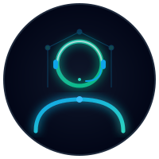

With 7+ years of engineering and management expertise, I specialize in bulletproofing enterprise infrastructure. From high-availability clustering and disaster recovery (DR) to ITIL-aligned operations, I build and scale systems that stay online when it matters most.

I am a technical IT Operations & Service Resilience Leader with over 7 years of hands-on experience in building and safeguarding enterprise infrastructures. My career at PT Datacomm Diangraha is a testament to growth, where I evolved from resolving service desk tickets to designing robust system engineering architectures, and ultimately leading teams in critical change, problem, and resilience management.
What sets me apart is my unique bridge between physical communications and modern cloud environments. Armed with a Bachelor's degree in Telecommunication Engineering from Politeknik Negeri Jakarta, I apply core principles of signal integrity and transmission stability to high-availability virtualization (VMware, Zerto) and structured ITIL v4 frameworks.
I view system failure as a design challenge, not an inevitability. My focus lies in proactive capacity modeling, meticulous risk mitigation, and deep Root Cause Analysis (RCA) to translate operational failures into bulletproof system improvements.
Passionate about maintaining 99.9% uptime by architecting active-active redundancies and resilient failover solutions.
Driving operational excellence through structured change management, risk assessments, and internal audits.
Seamlessly integrating core network services (DDI) with modern enterprise virtualization and DR orchestration.
Click to read more details...
Click to read more details...
Click to read more details...
Mari berkolaborasi untuk merancang infrastruktur yang tangguh. Hubungi saya untuk konsultasi ketahanan sistem IT, strategi Disaster Recovery, migrasi virtualisasi enterprise, atau peluang kerja sama profesional.